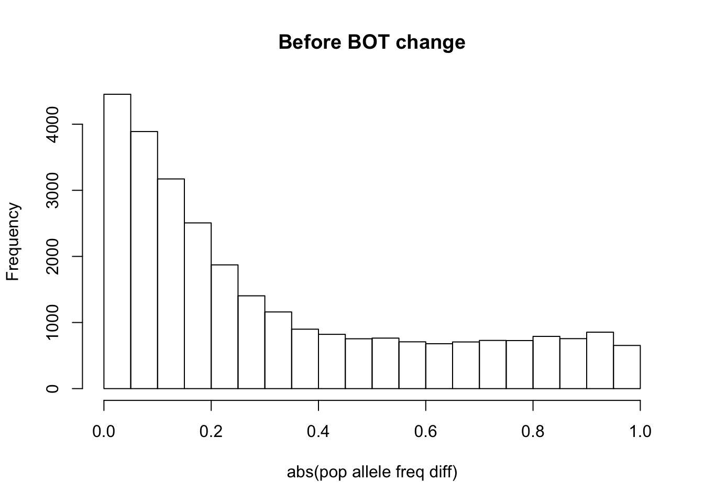
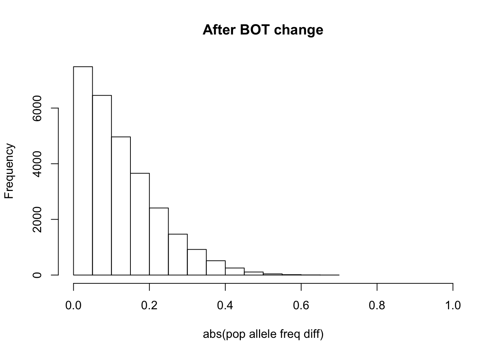
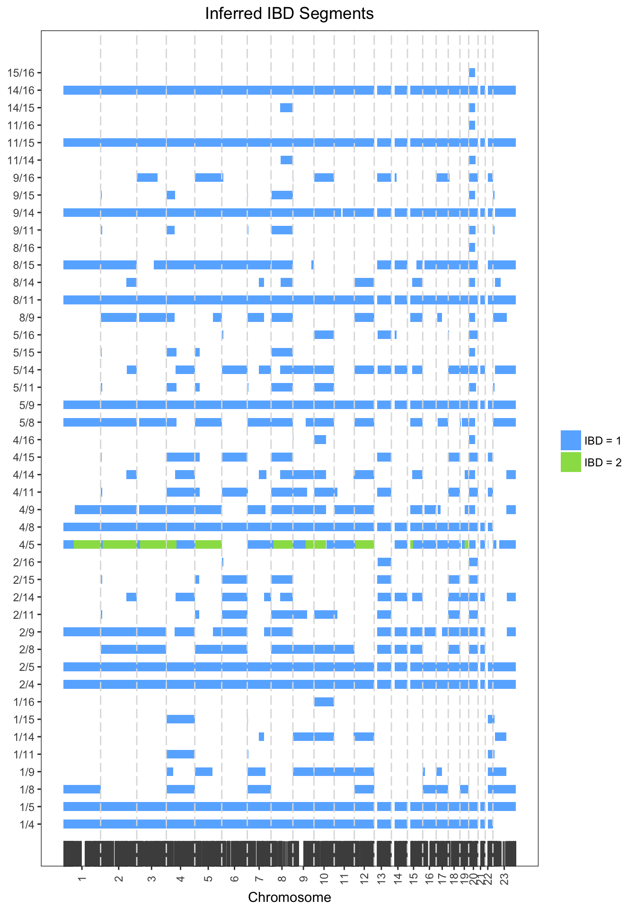
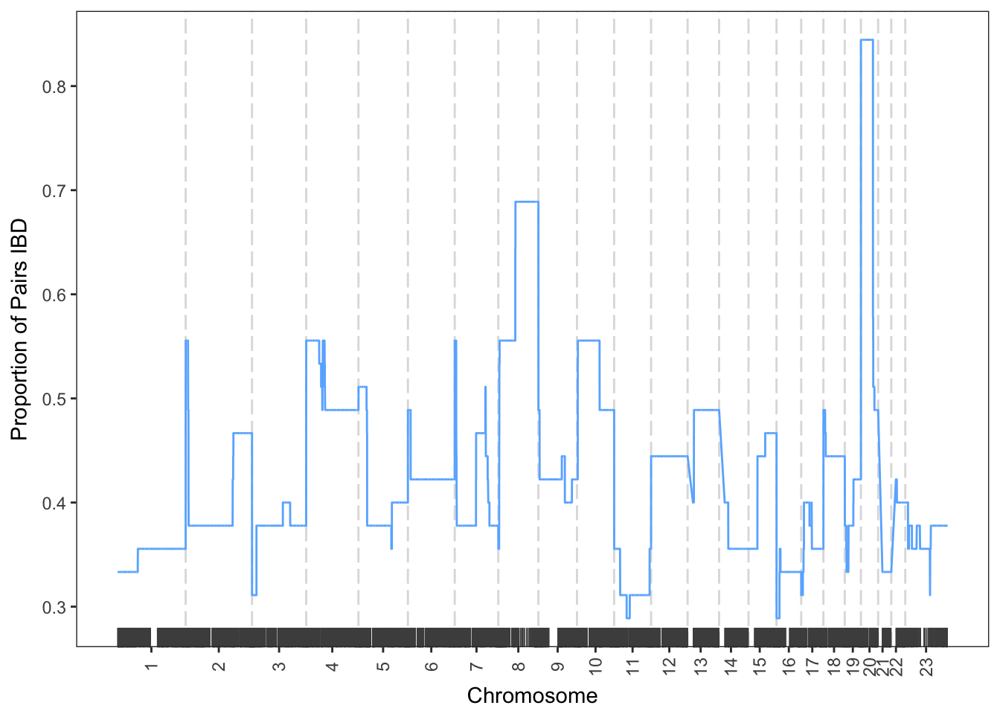

XIBD performs pairwise relatedness mapping on autosomes and the X chromosome using a first order continuous time hidden Markov model (HMM). First, XIBD estimates the proportion of genome shared identical by descent (IBD) between pairs of samples, which is useful as an initial measure of relatedness. Following this, XIBD can be used to detect genomic regions have been inherited IBD.
The user can select one of two HMMs to implement:
model=1 is based on the HMM implemented in PLINK (Purcell et al., 2007) which assumes the SNPs are in linkage equilibrium (LE). This often requires thinning of SNPs prior to use.
model=2 is based on the HMM implemented in RELATE (Albrechtsen et al., 2009) which allows SNPs to be in LD and implicitly accounts for some (not all) LD through conditional emission probabilities.
Of these HMMs, model=1 has a faster run-time than model=2 and is wise to use when then are many SNPs and many samples.
This document outlines the data format and key functions used by XIBD for relatedness mapping. For more details on the algorithm, see:
Henden et al. (2016) XIBD: software for inferring pairwise identity by descent on the X chromosome. Bioinformatics.
NOTE: XIBD should not be used with small reference datasets; reference populations that do not match the input population or cohorts of mixed populations.
The input for XIBD is unphased haplotype data for SNPs in PLINK PED and MAP format (http://www.cog-genomics.org/plink2).
A PED file is a white-space (space or tab) delimited file with the first six columns
The IDs are alphanumeric: the combination of family and individual ID should uniquely identify a person. Genotypes (column 7 onwards) should also be white-space delimited with the A and B alleles coded as 1 and 2 respectively and missing genotypes coded as 0. All SNPs (whether haploid or not) must have two alleles specified. For haploid chromosomes (X chromosome), genotypes should be specified as homozygous. Either Both alleles should be missing (i.e. 0) or neither. No header row should be given
The MAP file contains exactly 4 columns of information
where each row describes a single marker. Genetic map distances and base-pair positions are expected to be positive values. The MAP file must be ordered by increasing chromosomes and positions. SNP identifiers can contain any characters except spaces or tabs; also, you should avoid * symbols in names. The MAP file must contain as many markers as are in the PED file. No header row should be given.
If model=2 then a PLINK LD file is also required, see http://www.cog-genomics.org/plink2 for more details about this file and instructions on how to generate it. The LD file contains linkage disequilibrium information for pairs of SNPs and has 7 columns
where each row describes a the correlation between a single pair of SNPs.
XIBD calculates population allele frequencies and haplotype frequencies (model=2 only) from either the input dataset or a reference dataset. HapMap phase 2 and 3 PED, MAP and LD reference data (hg19/build 37) for the 11 HapMap populations can be downloaded from http://bioinf.wehi.edu.au/software/XIBD/. These files are in .rds format and can be loaded into R using readRDS.
NOTE: XIBD should not be used with small reference datasets; reference populations that do not match the input population or cohorts of mixed populations.
| HapMap Annotation | Population Description |
|---|---|
| ASW | African ancestry on Southwest USA |
| CEU | Utah residents with Northern and Western European ancestry from the CEPH collection |
| CHB | Han Chinese in Beijing, China |
| CHD | Chinese in Metropolitan Denver, Colorado |
| GIH | Gujarati Indians in Houston, Texas |
| JPT | Japanese in Tokyo, Japan |
| LWK | Luhya in Webuye, Kenya |
| MEX | Mexican ancestry in Los Angeles, California |
| MKK | Maasai in Kinyawa, Kenya |
| TSI | Toscans in Italy |
| YRI | Yoruba in Ibadan, Nigeria (West Africa) |
| Function | Description |
|---|---|
| calculateAlleleFreq | calculate population allele frequencies |
| getGenotypes | get genotypes from haplotype data and perform data filtering |
| getIBDparameters | estimate IBD parameters between pairs |
| getIBDsegments | detect IBD segments between pairs |
| getIdentityCoef | calculate identity coefficients from a pedigree |
| getLocusMatrix | create a binary matrix of IBD/non-IBD for each SNP and pair |
| getLocusProportions | calculate the proportion of pairs IBD at each SNP |
| plotIBDproportions | plot the proportion of pairs IBD across the genome |
| plotIBDsegments | plot the detected IBD segments across the genome |
| switchBOTgenotypes | switch A and B alleles for Illumina SNPs named using the TOPBOT method |
Below is an IBD analysis performed on simulated data to demonstrate the steps involved in XIBD. Change the parameters for each function to see how it affects the results.
**NOTE: R has a memory limit and if you try to exceed that limit, the error message begins cannot allocate vector of length. The number of bytes in a character string is limited to 2^31 - 1 ~ 2*10^9, which is also the limit on each dimension of an array.**
We begin by formatting and filtering input PED and MAP haplotype.
# load XIBD library
library(XIBD)
# lets look at the data
str(example_pedmap)## List of 2
## $ :'data.frame': 10 obs. of 57622 variables:
## ..$ : num [1:10] 1 1 1 1 1 1 1 1 1 1
## ..$ : int [1:10] 1 2 4 5 8 9 11 14 15 16
## ..$ : num [1:10] 0 0 1 1 4 6 7 9 11 13
## ..$ : num [1:10] 0 0 2 2 3 5 8 10 12 14
## ..$ : num [1:10] 1 2 1 2 2 1 1 2 2 1
## ..$ : num [1:10] 1 1 1 1 1 1 1 1 1 1
## ..$ : num [1:10] 2 2 2 2 2 2 2 2 2 1
## ..$ : num [1:10] 2 1 2 1 2 1 2 2 2 2
## ..$ : num [1:10] 1 1 2 2 2 2 1 2 1 1
## ..$ : num [1:10] 2 1 1 1 1 1 1 2 1 2
## ..$ : num [1:10] 2 1 1 1 1 2 2 2 2 1
## ..$ : num [1:10] 1 1 1 1 2 1 2 2 2 2
## ..$ : num [1:10] 1 1 2 2 2 2 1 2 1 2
## ..$ : num [1:10] 2 2 1 2 1 2 1 2 1 2
## ..$ : num [1:10] 2 1 1 1 1 1 1 1 2 2
## ..$ : num [1:10] 1 1 1 1 2 1 2 1 2 1
## ..$ : num [1:10] 2 2 2 2 2 1 1 1 2 2
## ..$ : num [1:10] 2 2 2 2 2 2 2 2 2 2
## ..$ : num [1:10] 2 2 2 2 2 2 2 2 2 2
## ..$ : num [1:10] 2 2 2 2 2 2 2 2 2 2
## ..$ : num [1:10] 2 2 2 2 2 2 2 2 2 2
## ..$ : num [1:10] 2 2 2 2 2 2 2 2 2 2
## ..$ : num [1:10] 2 2 2 2 2 2 2 2 2 2
## ..$ : num [1:10] 2 2 2 2 2 2 2 2 1 2
## ..$ : num [1:10] 1 1 1 1 1 1 1 1 1 1
## ..$ : num [1:10] 1 1 1 1 1 1 1 1 1 1
## ..$ : num [1:10] 2 2 2 2 2 2 2 2 2 2
## ..$ : num [1:10] 2 2 2 2 2 2 2 2 2 2
## ..$ : num [1:10] 2 2 2 2 2 2 2 2 2 2
## ..$ : num [1:10] 2 2 2 2 2 2 2 2 2 2
## ..$ : num [1:10] 2 2 2 2 2 1 1 1 1 2
## ..$ : num [1:10] 2 1 2 1 1 1 1 1 2 1
## ..$ : num [1:10] 1 2 2 2 2 2 2 2 2 2
## ..$ : num [1:10] 2 2 2 2 2 2 2 2 2 2
## ..$ : num [1:10] 1 1 1 1 1 1 1 1 1 1
## ..$ : num [1:10] 1 1 1 1 1 1 1 1 1 1
## ..$ : num [1:10] 2 1 1 1 1 2 2 2 2 2
## ..$ : num [1:10] 1 2 1 2 2 2 2 1 2 1
## ..$ : num [1:10] 2 1 2 2 2 2 2 2 2 1
## ..$ : num [1:10] 2 2 1 2 2 2 2 2 2 2
## ..$ : num [1:10] 2 2 2 2 2 2 2 2 2 2
## ..$ : num [1:10] 2 2 2 2 2 2 2 2 1 2
## ..$ : num [1:10] 2 1 2 2 2 2 1 2 2 2
## ..$ : num [1:10] 2 2 1 2 2 2 2 1 2 1
## ..$ : num [1:10] 1 2 1 1 1 1 1 1 1 1
## ..$ : num [1:10] 1 1 2 1 1 1 1 1 1 1
## ..$ : num [1:10] 2 2 2 2 2 2 2 2 2 2
## ..$ : num [1:10] 2 2 2 2 2 2 2 2 2 2
## ..$ : num [1:10] 2 2 2 2 2 2 2 2 2 2
## ..$ : num [1:10] 2 2 2 2 2 2 2 2 1 2
## ..$ : num [1:10] 2 2 2 2 2 2 2 2 1 2
## ..$ : num [1:10] 2 2 2 2 1 2 1 1 1 1
## ..$ : num [1:10] 2 1 2 2 2 1 1 1 1 2
## ..$ : num [1:10] 2 2 1 2 1 2 1 2 1 2
## ..$ : num [1:10] 2 2 2 2 2 2 2 2 1 1
## ..$ : num [1:10] 2 2 2 2 1 2 1 2 2 2
## ..$ : num [1:10] 2 2 1 1 1 2 2 2 2 1
## ..$ : num [1:10] 1 1 2 1 2 1 2 1 2 1
## ..$ : num [1:10] 2 2 2 2 2 2 2 2 2 2
## ..$ : num [1:10] 2 2 2 2 2 2 2 2 2 2
## ..$ : num [1:10] 1 1 1 1 1 1 1 1 1 1
## ..$ : num [1:10] 1 1 1 1 1 1 1 1 2 1
## ..$ : num [1:10] 2 2 2 2 2 2 2 2 2 2
## ..$ : num [1:10] 2 2 2 2 2 2 2 2 2 2
## ..$ : num [1:10] 2 2 2 2 2 2 2 2 1 2
## ..$ : num [1:10] 2 2 2 2 1 2 1 1 2 1
## ..$ : num [1:10] 1 1 1 1 1 1 1 1 1 1
## ..$ : num [1:10] 1 2 1 2 1 2 1 1 1 1
## ..$ : num [1:10] 1 2 2 2 2 1 1 1 1 2
## ..$ : num [1:10] 2 1 2 1 1 1 1 1 2 1
## ..$ : num [1:10] 2 2 1 1 1 2 2 2 2 2
## ..$ : num [1:10] 1 2 2 2 2 2 2 2 2 2
## ..$ : num [1:10] 1 1 1 1 1 1 1 1 1 1
## ..$ : num [1:10] 1 1 1 1 1 1 1 2 1 2
## ..$ : num [1:10] 2 1 1 1 1 2 2 2 1 2
## ..$ : num [1:10] 1 2 1 2 1 2 1 1 1 1
## ..$ : num [1:10] 1 1 1 1 1 1 2 1 2 1
## ..$ : num [1:10] 1 1 1 1 2 1 2 2 1 2
## ..$ : num [1:10] 2 2 2 2 2 2 2 2 2 2
## ..$ : num [1:10] 2 2 2 2 2 2 2 2 2 2
## ..$ : num [1:10] 2 1 2 2 2 2 1 2 2 1
## ..$ : num [1:10] 2 2 1 2 2 2 2 2 2 2
## ..$ : num [1:10] 2 2 2 2 2 1 2 1 2 2
## ..$ : num [1:10] 2 2 2 2 2 2 2 2 2 2
## ..$ : num [1:10] 1 1 2 2 2 1 2 1 2 2
## ..$ : num [1:10] 2 1 1 1 2 1 2 2 2 2
## ..$ : num [1:10] 1 2 1 1 1 1 1 1 1 1
## ..$ : num [1:10] 1 1 2 1 1 1 1 1 1 1
## ..$ : num [1:10] 2 2 2 2 2 1 2 1 2 1
## ..$ : num [1:10] 2 2 2 2 2 2 2 2 1 2
## ..$ : num [1:10] 1 1 1 1 1 1 1 1 1 2
## ..$ : num [1:10] 1 2 1 2 1 2 1 1 1 1
## ..$ : num [1:10] 2 1 2 2 2 2 2 2 1 2
## ..$ : num [1:10] 2 1 1 1 1 1 1 2 2 2
## ..$ : num [1:10] 2 1 2 2 2 2 2 2 2 2
## ..$ : num [1:10] 2 2 1 2 2 2 2 2 2 2
## ..$ : num [1:10] 2 1 1 1 1 1 1 1 1 1
## ..$ : num [1:10] 1 1 1 1 1 1 1 1 2 1
## ..$ : num [1:10] 1 1 1 1 1 2 1 2 1 1
## .. [list output truncated]
## $ :'data.frame': 28808 obs. of 4 variables:
## ..$ : int [1:28808] 1 1 1 1 1 1 1 1 1 1 ...
## ..$ : chr [1:28808] "rs7526076" "rs6671356" "rs10907182" "rs4970362" ...
## ..$ : num [1:28808] 0.0261 0.0267 0.0269 0.0273 0.0281 0.0302 0.0302 0.0303 0.0305 0.0316 ...
## ..$ : int [1:28808] 998395 1040026 1066403 1094738 1106784 1276077 1287040 1310924 1335218 1404809 ...# format and filter the example data
my_genotypes <- getGenotypes(ped.map = example_pedmap,
reference.ped.map = example_reference_pedmap,
snp.ld = example_reference_ld,
model = 2,
maf = 0.01,
sample.max.missing = 0.1,
snp.max.missing = 0.1,
maximum.ld.r2 = 0.99,
chromosomes = NULL,
input.map.distance = "M",
reference.map.distance = "M")## Begin filtering of 10 samples and 28808 SNPs...
## 28808 SNPs remain after merging with reference dataset...
## 28805 SNPs remain after MAF removal...
## 28558 SNPs remain after missingness removal...
## 28297 SNPs remain after LD removal...
## 10 samples remain after missingness removal...str(my_genotypes)## List of 3
## $ pedigree :'data.frame': 10 obs. of 6 variables:
## ..$ fid: num [1:10] 1 1 1 1 1 1 1 1 1 1
## ..$ iid: int [1:10] 1 2 4 5 8 9 11 14 15 16
## ..$ pid: num [1:10] 0 0 1 1 4 6 7 9 11 13
## ..$ mid: num [1:10] 0 0 2 2 3 5 8 10 12 14
## ..$ sex: num [1:10] 1 2 1 2 2 1 1 2 2 1
## ..$ aff: num [1:10] 1 1 1 1 1 1 1 1 1 1
## $ genotypes:'data.frame': 28297 obs. of 21 variables:
## ..$ chr : int [1:28297] 1 1 1 1 1 1 1 1 1 1 ...
## ..$ snp_id : chr [1:28297] "rs7526076" "rs6671356" "rs10907182" "rs4970362" ...
## ..$ pos_M : num [1:28297] 0.0261 0.0267 0.0269 0.0273 0.0281 0.0302 0.0302 0.0303 0.0305 0.0316 ...
## ..$ pos_bp : int [1:28297] 998395 1040026 1066403 1094738 1106784 1276077 1287040 1310924 1335218 1404809 ...
## ..$ freq : num [1:28297] 0.265 0.186 0.58 0.368 0.245 ...
## ..$ condition_snp : num [1:28297] -1 1 2 3 4 5 6 7 7 9 ...
## ..$ pba : num [1:28297] 0 0.598 0.267 0.136 0.473 ...
## ..$ pbA : num [1:28297] 0 0.137 0.543 0.284 0.159 ...
## ..$ pBa : num [1:28297] 0 0.216 0.153 0.494 0.281 ...
## ..$ pBA : num [1:28297] 0 0.0488 0.0374 0.0857 0.0862 ...
## ..$ freq_condition_snp: num [1:28297] 0.265 0.265 0.19 0.58 0.368 ...
## ..$ 1/1 : int [1:28297] 2 1 1 1 1 2 2 2 2 0 ...
## ..$ 1/2 : int [1:28297] 1 0 0 1 0 2 2 2 2 0 ...
## ..$ 1/4 : int [1:28297] 2 1 0 1 0 2 2 2 2 0 ...
## ..$ 1/5 : int [1:28297] 1 1 0 2 0 2 2 2 2 0 ...
## ..$ 1/8 : int [1:28297] 2 1 1 1 1 2 2 2 2 0 ...
## ..$ 1/9 : int [1:28297] 1 1 1 2 0 1 2 2 2 0 ...
## ..$ 1/11 : int [1:28297] 2 0 2 0 1 1 2 2 2 0 ...
## ..$ 1/14 : int [1:28297] 2 2 2 2 0 1 2 2 2 0 ...
## ..$ 1/15 : int [1:28297] 2 0 2 0 2 2 2 2 1 0 ...
## ..$ 1/16 : int [1:28297] 1 1 1 2 1 2 2 2 2 0 ...
## $ model : num 2If the input data has been generated from an Illumina platform and HapMap reference data is being used then it is a good idea to check that the A and B alleles as denoted by Illumina match the A and B alleles in the HapMap data.
The HapMap allele frequencies in XIBDs HapMap allele frequency files are calculated for the A allele only, where the A allele is determined by the following rules:
Illuminas convention for the naming of A and B alleles differs to that of the HapMap data (http://www.illumina.com/documents/products/technotes/technote_topbot.pdf). Rather, the classification of A and B alleles depend on the top (TOP) and bottom (BOT) designations of the SNP. This means that the A allele in the HapMap data is not always the same as the A allele in the Illumina data. In fact, alleles that have been named according to the BOT designation actually correspond to the B allele in the HapMap data. This discrepancy will result in population allele frequencies that differ considerably between the input dataset and the reference dataset, which will produce an unreliable analysis.
To correct for this, switchBOTgenotypes() switches the A and B alleles in the filtered dataset for all SNPs corresponding to Illumina BOT designations. This mean a homozygous reference genotype, 0, will be changed to a homozygous alternative genotype, 2, and vis versa. Heterozygous genotypes remain unchanged.
We have created an annotation file containing information on the TOP/BOT designations for each SNP in the HapMap data that can be downloaded from http://bioinf.wehi.edu.au/software/XIBD/. This file is required if you need to correct for the TOP/BOT naming convention.
For the purpose of this example, we simulated data using Illumina’s naming convention.
NOTE: this function should only be implemented with Illumina data when HapMap reference data is used and if there is a noticeable discrepancy between population allele frequencies calculated from the HapMap reference data and those calculated from the input dataset.
# calculate allele frequencies from the input dataset
input_freq <- calculateAlleleFreq(ped.genotypes = my_genotypes)
hist(abs(my_genotypes[["genotypes"]][,"freq"] - input_freq[,"freq"]),
xlim = c(0,1),
main = "Before BOT change",
xlab = "abs(pop allele freq diff)")
# switch alleles
my_genotypes_2 <- switchBOTgenotypes(ped.genotypes = my_genotypes,
hapmap.topbot = example_hapmap_topbot)
# calculate allele frequencies when BOT alleles switched
input_freq <- calculateAlleleFreq(ped.genotypes = my_genotypes_2)
hist(abs(my_genotypes_2[["genotypes"]][,"freq"] - input_freq[,"freq"]),
xlim = c(0,1),
main = "After BOT change",
xlab = "abs(pop allele freq diff)")
Next we estimate the model parameters. These parameters can be useful as an initial measure of relatedness.
# estimate parameters
my_parameters <- getIBDparameters(ped.genotypes = my_genotypes_2,
number.cores = 1)##
|
| | 0%
|
|= | 2%
|
|=== | 4%
|
|==== | 7%
|
|====== | 9%
|
|======= | 11%
|
|========= | 13%
|
|========== | 16%
|
|============ | 18%
|
|============= | 20%
|
|============== | 22%
|
|================ | 24%
|
|================= | 27%
|
|=================== | 29%
|
|==================== | 31%
|
|====================== | 33%
|
|======================= | 36%
|
|========================= | 38%
|
|========================== | 40%
|
|=========================== | 42%
|
|============================= | 44%
|
|============================== | 47%
|
|================================ | 49%
|
|================================= | 51%
|
|=================================== | 53%
|
|==================================== | 56%
|
|====================================== | 58%
|
|======================================= | 60%
|
|======================================== | 62%
|
|========================================== | 64%
|
|=========================================== | 67%
|
|============================================= | 69%
|
|============================================== | 71%
|
|================================================ | 73%
|
|================================================= | 76%
|
|=================================================== | 78%
|
|==================================================== | 80%
|
|===================================================== | 82%
|
|======================================================= | 84%
|
|======================================================== | 87%
|
|========================================================== | 89%
|
|=========================================================== | 91%
|
|============================================================= | 93%
|
|============================================================== | 96%
|
|================================================================ | 98%
|
|=================================================================| 100%str(my_parameters)## List of 2
## $ autosome_parameters :'data.frame': 45 obs. of 8 variables:
## ..$ fid1: chr [1:45] "1" "1" "1" "1" ...
## ..$ iid1: chr [1:45] "1" "1" "1" "1" ...
## ..$ fid2: chr [1:45] "1" "1" "1" "1" ...
## ..$ iid2: chr [1:45] "2" "4" "5" "8" ...
## ..$ m : num [1:45] 6.06 8.59 1 7.98 10.04 ...
## ..$ ibd0: num [1:45] 0.97 0 0 0.665 0.65 ...
## ..$ ibd1: num [1:45] 0.0299 0.9896 1 0.3188 0.3464 ...
## ..$ ibd2: num [1:45] 0 0.0104 0 0.0158 0.0038 0.0021 0 0.0013 0 0.0079 ...
## $ X_chromosome_parameters:'data.frame': 45 obs. of 8 variables:
## ..$ fid1: chr [1:45] "1" "1" "1" "1" ...
## ..$ iid1: chr [1:45] "1" "1" "1" "1" ...
## ..$ fid2: chr [1:45] "1" "1" "1" "1" ...
## ..$ iid2: chr [1:45] "2" "4" "5" "8" ...
## ..$ m : num [1:45] 6.41 5.68 1 1 1.9 ...
## ..$ ibd0: num [1:45] 0.977 0.961 0 0 0.463 ...
## ..$ ibd1: num [1:45] 0.0235 0.0389 1 1 0.5374 ...
## ..$ ibd2: num [1:45] 0 0 0 0 0 0 0 0 0 0 ...IBD segments can be detected as follows.
# infer IBD
my_ibd <- getIBDsegments(ped.genotypes = my_genotypes_2,
parameters = my_parameters,
model = NULL,
chromosomes = NULL,
number.cores = 1,
minimum.snps = 20,
minimum.length.bp = 50000,
error = 0.001,
posterior = FALSE)##
|
| | 0%
|
|= | 2%
|
|=== | 4%
|
|==== | 7%
|
|====== | 9%
|
|======= | 11%
|
|========= | 13%
|
|========== | 16%
|
|============ | 18%
|
|============= | 20%
|
|============== | 22%
|
|================ | 24%
|
|================= | 27%
|
|=================== | 29%
|
|==================== | 31%
|
|====================== | 33%
|
|======================= | 36%
|
|========================= | 38%
|
|========================== | 40%
|
|=========================== | 42%
|
|============================= | 44%
|
|============================== | 47%
|
|================================ | 49%
|
|================================= | 51%
|
|=================================== | 53%
|
|==================================== | 56%
|
|====================================== | 58%
|
|======================================= | 60%
|
|======================================== | 62%
|
|========================================== | 64%
|
|=========================================== | 67%
|
|============================================= | 69%
|
|============================================== | 71%
|
|================================================ | 73%
|
|================================================= | 76%
|
|=================================================== | 78%
|
|==================================================== | 80%
|
|===================================================== | 82%
|
|======================================================= | 84%
|
|======================================================== | 87%
|
|========================================================== | 89%
|
|=========================================================== | 91%
|
|============================================================= | 93%
|
|============================================================== | 96%
|
|================================================================ | 98%
|
|=================================================================| 100%
## 44 pairs inferred IBD
## 538 IBD segments detectedstr(my_ibd)## List of 1
## $ ibd_segments:'data.frame': 538 obs. of 15 variables:
## ..$ fid1 : chr [1:538] "1" "1" "1" "1" ...
## ..$ iid1 : chr [1:538] "1" "1" "1" "1" ...
## ..$ fid2 : chr [1:538] "1" "1" "1" "1" ...
## ..$ iid2 : chr [1:538] "4" "4" "4" "4" ...
## ..$ chr : chr [1:538] "1" "2" "3" "4" ...
## ..$ start.snp : chr [1:538] "rs7526076" "rs376385" "rs9682794" "rs4690243" ...
## ..$ end.snp : chr [1:538] "rs10788875" "rs4675974" "rs7634881" "rs2739584" ...
## ..$ start.position.bp: num [1:538] 998395 190245 70895 215351 442790 ...
## ..$ end.position.bp : num [1:538] 2.49e+08 2.42e+08 1.98e+08 1.91e+08 1.80e+08 ...
## ..$ start.position.M : num [1:538] 0.0261 0.0007 0.0001 0.0037 0.0032 0.0032 0.0033 0.0002 0.0019 0.0004 ...
## ..$ end.position.M : num [1:538] 2.86 2.68 2.23 2.15 2.03 ...
## ..$ number.snps : num [1:538] 2310 2375 1774 1569 1859 ...
## ..$ length.bp : num [1:538] 2.48e+08 2.42e+08 1.98e+08 1.91e+08 1.80e+08 ...
## ..$ length.M : num [1:538] 2.84 2.68 2.23 2.14 2.03 ...
## ..$ ibd.status : num [1:538] 1 1 1 1 1 1 1 1 1 1 ...XIBD comes with several plotting functions to make interpretation of IBD results easier. Below we plot detected IBD segments across the genome.
# plot IBD segments
plotIBDsegments(ibd.segments = my_ibd,
ped.genotypes = my_genotypes_2,
interval = NULL,
annotation.genes = NULL,
highlight.genes = NULL,
segment.height = 0.5,
number.per.page = NULL,
add.fid.name = FALSE,
add.iid.name = TRUE,
add.rug = TRUE,
plot.title = "Inferred IBD Segments",
add.legend = TRUE)
We can also look to investigate if some regions of the genome have more IBD than others by plotting the proportion of pairs IBD at each SNP.
# get IBD proportions
my_locus_matrix <- getLocusMatrix(ped.genotypes = my_genotypes_2,
ibd.segments = my_ibd)
my_locus_prop <- getLocusProportion(ped.genotypes = my_genotypes_2,
locus.matrix = my_locus_matrix,
groups = NULL)
# plot IBD proportions
plotIBDproportions(locus.proportions = my_locus_prop,
interval = NULL,
annotation.genes = NULL,
highlight.genes = NULL,
add.rug = TRUE,
plot.title = NULL)
Identity coefficients can be computed given a pedigree as follows.
NOTE: this function requires all individual IDs to be numeric and hence some manual formatting of the pedigree may be required. Additionally, individuals in the pedigree should be numbered in a way such that every parent precedes his or her children.
# get identity coefficients
my_pedigree <- data.frame(fid = rep(1,16),
iid = 1:16,
pid = c(0,0,0,1,1,0,0,4,6,0,7,0,0,9,11,13),
mid = c(0,0,0,2,2,0,0,3,5,0,8,0,0,10,12,14),
sex = c(1,2,2,1,2,1,1,2,1,2,1,2,1,2,2,1),
aff = rep(1,16))
identity_coef <- getIdentityCoef(pedigree = my_pedigree,
number.cores = 1)
head(identity_coef)## fid1 iid1 fid2 iid2 a_i0 a_i1 a_i2 x_i0 x_i1 x_i2
## 1 1 1 1 2 1 0 0 1 0 0
## 2 1 1 1 3 1 0 0 1 0 0
## 3 1 1 1 4 0 1 0 1 0 0
## 4 1 1 1 5 0 1 0 0 1 0
## 5 1 1 1 6 1 0 0 1 0 0
## 6 1 1 1 7 1 0 0 1 0 0